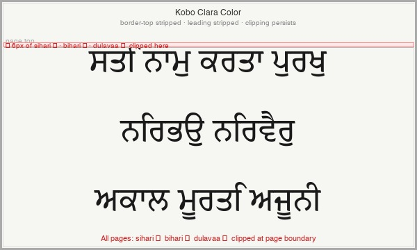
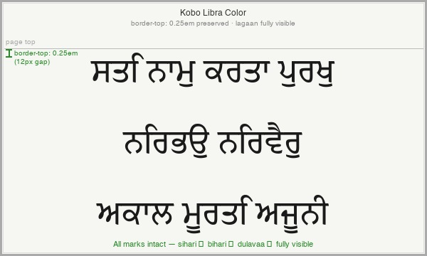

We are building a Gurmukhi EPUB for Kobo e-ink readers and have exhausted all known CSS and font-metric approaches to fix ascending vowel mark (lagaan) clipping at the top of pages in KEPUB. We are asking for Kobo's help on three specific points:
hhea.ascent, OS/2.sTypoAscender, or something else?In a Gurmukhi EPUB (Japji Sahib, TiroGurmukhi font, EPUB3 converted to KEPUB via kepubify), ascending vowel marks — sihari ਿ, bihari ੀ, dulavaa ੈ — are clipped at the top of every new page on Kobo Clara Color. The same marks render correctly on every line that is not the first line of a page.
Root cause: In KEPUB, the top half-leading is stripped from the first line on each new page. For Latin fonts this is invisible — Latin glyphs sit within the declared hhea.ascent. For Gurmukhi (and Indic scripts generally), vowel marks routinely exceed hhea.ascent and rely on that half-leading buffer. When it is stripped, they clip against the page boundary.
Key font metrics for TiroGurmukhi (embedded, OFL):
| Metric | Value | Notes |
|---|---|---|
hhea.ascent |
755u → patched to 930u | Raised at build time to cover all lagaan |
OS/2.sTypoAscender |
755u → patched to 930u | USE_TYPO_METRICS flag is set; raised to match |
OS/2.usWinAscent |
1447u | Unchanged — already well above all glyph yMax values |
| Highest lagaan yMax | 918u (dulavaa ੈ) | Below patched content area of 930u |
| Sihari / bihari yMax | 884u | Both identical |
Device behaviour:
border-top fix (see Solutions); that renderer preserves border-top on page-first elements where Clara does notThis issue would affect any Indic script font where vowel marks exceed hhea.ascent, which is common — Devanagari, Bengali, Gurmukhi, Tamil and others all have ascending marks that extend above typical hhea values.


border-top fix. The green bracket shows the 0.25 em gap that the renderer preserves above the first line.| Approach | Outcome | Notes |
|---|---|---|
@page { margin-top: 48px } |
No fix | Moves the page boundary down; lagaan still bleed above it. Clara does not appear to honour @page for content layout in KEPUB. |
div { border-top: 0.25em solid transparent } on each line wrapper |
Fixed Libra / No fix Clara | Libra Color preserves border-top on page-first elements; Clara strips it along with padding-top and margin-top. |
Patch embedded font: raise hhea.ascent and OS/2.sTypoAscender from 755u to 930u at build time |
No fix | All lagaan (max 918u) now fall within the patched content area of 930u. Clipping continues on Clara, suggesting the renderer uses a different metric or a simplified em-box model that ignores these values entirely. |
white-space: nowrap !important, overflow-wrap: normal !important on word spans |
Separate issue | Addressed word-splitting at large font sizes (separate from clipping). Not related to the lagaan clipping problem. |
Grapheme-cluster-level <span> wrapping in shaper |
Separate issue | Addressed kepubify splitting combining marks from base consonants. Not related to the lagaan clipping problem. |
The inconsistency between Clara Color and Libra Color — where the same EPUB and same CSS produce different results — strongly suggests a renderer version difference. We would like to understand what metric or model Clara is actually using so we can implement a correct workaround, or to know if this is a bug being tracked on Kobo's side.
EPUB source: github.com/kapilray/gurbani-eink-engine · Font: Tiro Gurmukhi, Tiro Typeworks (OFL) · KEPUB conversion: kepubify via send.djazz.se